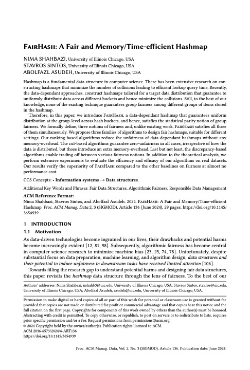

FairHash: A Fair and Memory/Time-efficient Hashmap

Hashmaps are among the most widely used data structures in computing, serving as a basic primitive in data processing, indexing, caching, and large-scale systems. Yet standard hash functions are designed to optimize efficiency, not fairness.
Given a dataset, traditional random hashmaps do not uniformly distribute points across a fixed number of buckets. Even data-informed hashmaps, while able to improve bucket balance, may still fail to preserve equal group representation inside each bucket. As a result, they can introduce systematic disparities that later propagate through downstream analytics and decision-making pipelines.
FairHash addresses this issue directly. It guarantees zero unfairness while simultaneously ensuring a uniform distribution of points across buckets and equal group ratios within each bucket, regardless of how the original data is distributed.
Formally, FairHash satisfies pairwise fairness: for pairs of points drawn from different demographic groups, the collision probability, and therefore the false positive rate, is exactly 1/m, where m is the number of buckets. This gives a precise fairness guarantee at the level of the data structure itself.
To the best of our knowledge, FairHash was the first work to study group fairness in a fundamental data structure. The design combines ideas from computational geometry with recent advances in the elegant yet less widely known problem of necklace splitting.
Beyond its theoretical contribution, FairHash has clear practical relevance across the responsible data science pipeline, wherever hashing is used as a building block for efficient storage, retrieval, or approximate processing.
Citation: Nima Shahbazi, Stavros Sintos, and Abolfazl Asudeh. 2024. FairHash: A Fair and Memory/Time-efficient Hashmap. Proc. ACM Manag. Data 2, 3, Article 136 (June 2024), 29 pages. https://doi.org/10.1145/3654939